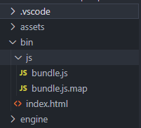

项目工程目录说明
Author：Charley
一、目录构成概述
LayaAir IDE创建的项目工程，由五个可见目录与几个根目录的文件构成，效果如图1所示。

（图1）
1.1 工程文件
.laya 后缀的文件是LayaAir引擎项目工程文件，用于识别是否是LayaAir引擎项目，版本信息，以及不同名称的项目。
1.2 ts编译配置文件
由于LayaAir3.0项目只支持TS语言开发，所以也默认创建了一个tsconfig.json。
tsconfig.json是用来配置 TS 编译选项的，位于项目的根目录。
如果想了解该配置的详细信息，请直接前往TS语言的文档：
https://www.tslang.cn/docs/handbook/tsconfig-json.html
https://www.tslang.cn/docs/handbook/compiler-options.html
二、日常开发的目录
在LayaAir3.0的项目工程目录结构里，开发者真正需要关心的只有两个目录，项目资源目录assets与项目源码目录src。其它的目录，大家知道其作用即可。
2.1 项目资源目录assets
assets目录是比较重要的项目目录，我们所有的场景与资源都在assets目录，IDE对项目资源的管理，都是来自于该目录。
效果如图2-1所示：
（图2-1）
该目录与最终的发布有着密切的关联，
例如，场景Scene中在assets里引入的资源会自动复制到发布目录。
代码里引用的资源，必须放到resources目录里，才会被复制到发布目录里。
2.2 项目源码目录src
src里源码目录，如图2-2所示。

(图2-2)
[!Tip]
源码目录比较容易理解，
对于LayaAir1.0与2.0的用户，需要注意的是，Main.ts不再是入口，仅仅是默认创建的一个示例脚本。
入口是IDE里设置的启动场景，启动场景绑定的runtime类或脚本，会跟随启动场景运行，作为项目的入口。
三、其它目录
其它的目录，开发者知道其作用即可，日常开发中，开发者基本上不需要去处理。
3.1 vscode配置目录.vscode
由于LayaAir项目的推荐编码环境是vscode，所以在创建项目的时候，在.vscode里创建 了settings.json，如图3-1所示：

（图3-1）
settings.json里当前只配置了一些需要隐藏显示的文件，让项目看起来更“整洁”一些，
.DS_Store是MacOS系统下产生的一些系统文件，所以没必要看到。
.meta是IDE用于识别与管理文件的文件，开发者也无需关注。
Library、temp、local、settingst这些目录，也是IDE仅供系统配置使用，不希望开发者修改，也给隐藏了起来。
3.2 本地运行目录bin
bin目录内，开发者通常也不需要去管。在开发的过程中，assets目录作为资源使用的根目录即可。
bin目录内仅是测试运行的index.html首页的入口，以及IDE内置的代码入口。如图3-2所示：

(图3-2)
[!Tip]
开发者尽量不要去修改这里的入口，以及在bin目录下存放资源，这与LayaAir1.0与2.0有很大的不同。
3.3、项目库目录libs
engine目录里存放的是引擎库的声名文件，如图3-3所示，通常不需要动。

（图3-3）
如果开发者有引用第三方的类库，也可以将声名文件放到这里。